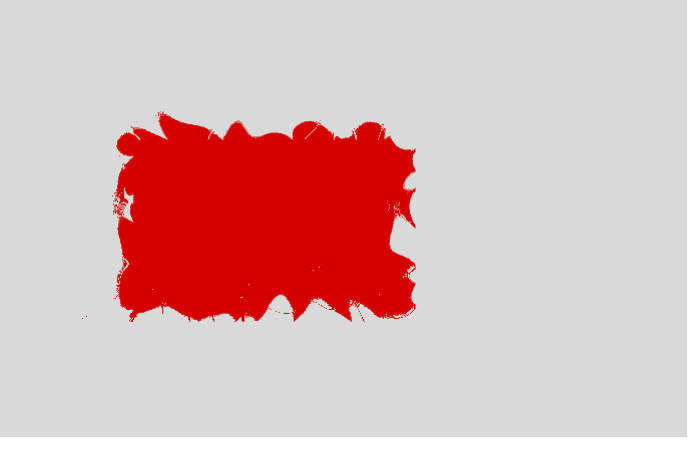
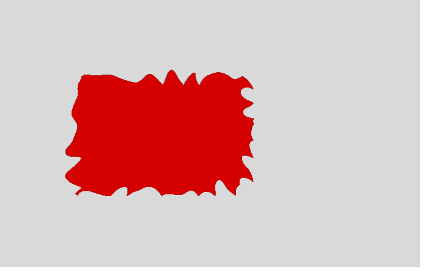
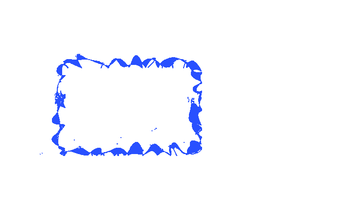

REFERENCE-DISPUTED 10068 px · above-floor 3.18% · raw 3.20% max-page diff r2-filter-url-feturbulence-displacement · feturbulence-displacement · REFERENCE DISPUTEDColorValueΔE 45.7



why: fill recolour ΔRGB(-3,-42,-42) (ΔE 45.7)
Procedural SVG filter primitives must affect static output: An inline SVG filter referenced from CSS contains a non-feColorMatrix primitive or unsupported matrix form. Catches wrong implementation: CSS filter:url() resolver extracts only a narrow feColorMatrix subset and skips the primitive.
reference dispute: Filter Effects 1 section 9.21 supplies the exact feTurbulence algorithm: zero and over-length random gradient vectors are rejected and consume a new pseudorandom pair. Chromium PDF and Firefox screen output instead agree with the legacy normalize-every-pair field; authored position controls confirm Chromium still uses the required local coordinate system. Its PDF is therefore a compatibility canary, not a normative pixel oracle.
regions (16 total; showing 16 representatives)
Complete dominant-class aggregates
| class | regions | pixels | union bbox (CSS px) | largest px | maximum magnitude |
|---|---|---|---|---|---|
| ColorErr | 16 | 10068 | 26,36 → 133,103 | 9996 | total 3.4% · largest 3.3% · max ΔE 45.7 |
Representative region details (worst-first)
| class | bbox (CSS px) | area% | magnitude | reason |
|---|---|---|---|---|
| ColorValue | 34,36 → 133,103 | 3.3 | ΔE 45.7 ΔRGB(-3,-44,-44) | fill recolour ΔRGB(-3,-44,-44) (ΔE 45.7) |
| ColorValue | 124,64 → 124,65 | 0.002665 | ΔRGB(0,-8,-8) | fill recolour ΔRGB(+0,-8,-8) (ΔE 0) |
| ColorValue | 124,66 → 124,67 | 0.002665 | ΔRGB(0,-17,-17) | fill recolour ΔRGB(+0,-17,-17) (ΔE 0) |
| ColorValue | 102,84 → 103,85 | 0.001999 | ΔRGB(1,-12,-12) | fill recolour ΔRGB(+1,-12,-12) (ΔE 0) |
| ColorValue | 77,95 → 77,95 | 0.001999 | ΔRGB(0,-29,-29) | fill recolour ΔRGB(+0,-29,-29) (ΔE 0) |
| ColorValue | 50,37 → 50,37 | 0.001332 | ΔRGB(1,49,49) | fill recolour ΔRGB(+1,+49,+49) (ΔE 0) |
| ColorValue | 38,50 → 38,50 | 0.001332 | ΔRGB(1,43,43) | fill recolour ΔRGB(+1,+43,+43) (ΔE 0) |
| ColorValue | 36,62 → 36,63 | 0.001332 | ΔRGB(2,86,86) | fill recolour ΔRGB(+2,+86,+86) (ΔE 0) |
| ColorValue | 124,65 → 124,66 | 0.001332 | ΔRGB(0,-16,-16) | fill recolour ΔRGB(+0,-16,-16) (ΔE 0) |
| ColorValue | 102,85 → 102,85 | 0.001332 | ΔRGB(0,-38,-38) | fill recolour ΔRGB(+0,-38,-38) (ΔE 0) |
| ColorValue | 100,86 → 100,86 | 0.001332 | ΔRGB(0,-35,-35) | fill recolour ΔRGB(+0,-35,-35) (ΔE 0) |
| ColorValue | 79,91 → 80,91 | 0.001332 | ΔRGB(0,-21,-21) | fill recolour ΔRGB(+0,-21,-21) (ΔE 0) |
| ColorValue | 49,92 → 49,92 | 0.001332 | ΔRGB(0,-27,-27) | fill recolour ΔRGB(+0,-27,-27) (ΔE 0) |
| ColorValue | 121,94 → 121,94 | 0.001332 | ΔRGB(0,-27,-27) | fill recolour ΔRGB(+0,-27,-27) (ΔE 0) |
| ColorValue | 28,101 → 28,101 | 0.001332 | ΔRGB(1,20,20) | fill recolour ΔRGB(+1,+20,+20) (ΔE 0) |
| ColorValue | 26,101 → 27,102 | 0.001332 | ΔRGB(1,18,18) | fill recolour ΔRGB(+1,+18,+18) (ΔE 0) |
source · cases/filters/r2-filter-url-feturbulence-displacement.html
1<!DOCTYPE html>
2<html lang="en">
3<head>
4<meta charset="utf-8">
5<title>r2 feturbulence-displacement</title>
6<style>
7 @page { size: 224px 144px; margin: 0; }
8 html { font-family: ParitySans; line-height: 1.5; }
9 * { margin: 0; box-sizing: border-box; }
10 html, body { background: #ffffff; }
11 svg.defs { position: absolute; width: 0; height: 0; overflow: hidden; }
12 .stage { width: 220px; height: 140px; padding: 36px 34px; background: #d9d9d9; }
13 .box { width: 90px; height: 58px; background: #d50000; filter: url(#r2f); }
14</style>
15</head>
16<body>
17 <svg class="defs" width="0" height="0" aria-hidden="true" focusable="false"><defs><filter id="r2f" x="-20%" y="-20%" width="140%" height="140%"><feTurbulence type="turbulence" baseFrequency="0.08" numOctaves="1" seed="7" result="noise"/><feDisplacementMap in="SourceGraphic" in2="noise" scale="18" xChannelSelector="R" yChannelSelector="G"/></filter></defs></svg>
18 <div class="stage"><div class="box"></div></div>
19</body>
20</html>